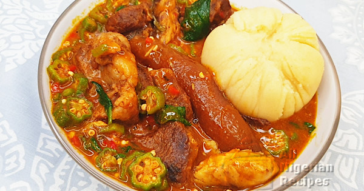

Ogbono-Okro Soup

ogbono-okra-soup
This Nigerian soup is very delicous and can be eaten with any kind of fufu from semo to garri and even pounded yam
Ingredients
- Ogbono
- Okro
- Smoked fish
- Palm oil
- Crayfish
- Beef
Steps on how to prepare it
- Put beef in your pot and spicy it add water and start cooking
- After 15mintues add your smoked fish and stock fish
- In a plate add your ogbono then add palm oil to the ogbono and mix
- Add the ogbono
- Add sliced okro